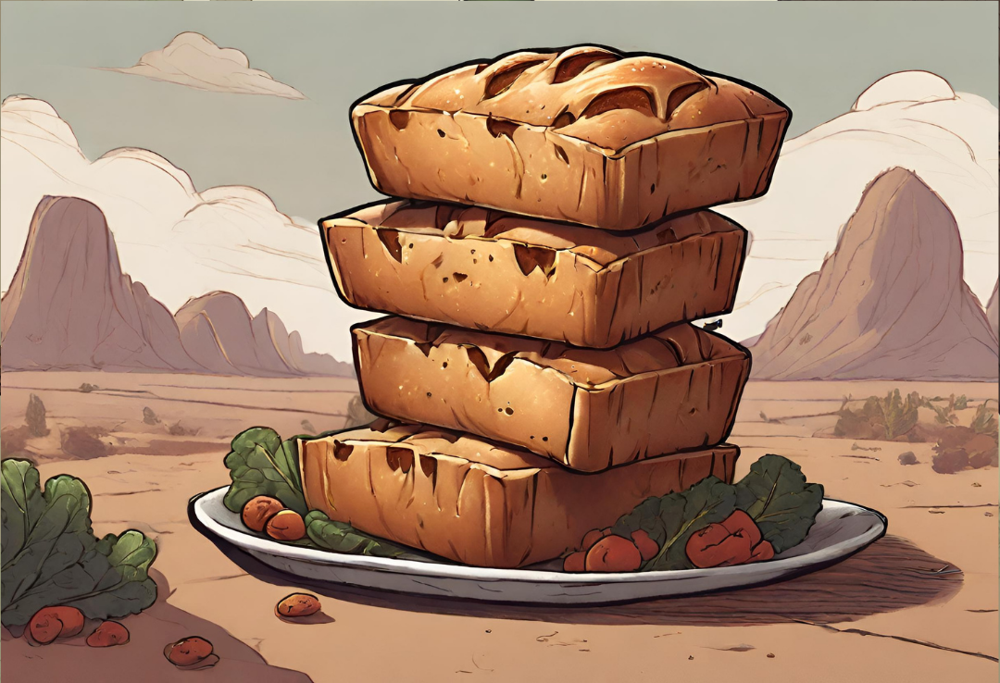

Tolkien's Middle Earth Lembas

Description
Lembas, often referred to as Elvish waybread, is a special type of sustenance in J.R.R. Tolkien's Middle-earth.
Crafted by the Elves, this unique bread serves as a compact and highly nutritious food source, known for its
dense texture and slightly sweet taste. In "The Lord of the Rings," characters rely on lembas as a vital
provision during their arduous journeys. Each small, carefully wrapped portion is said to provide a remarkable
amount of energy, making it an iconic and essential element in the lore of Middle-earth.
In the narrative, lembas is not only a practical provision but also carries a symbolic significance. Crafted with
Elvish craftsmanship and imbued with a touch of magic, it reflects the connection between the Elves and their
land. Its qualities go beyond mere sustenance, hinting at the deeper mystical threads woven into Tolkien's
richly imagined world.
Ingredients
- 2 cups whole wheat flour
- 1 cup barley flour
- 1/2 cup honey
- 1/4 cup unsalted butter, softened
- 1/4 cup dried fruits (such as raisins, currants, or chopped dates)
- 1/4 cup chopped nuts (such as almonds or walnuts)
- 1/2 teaspoon salt
- 1/2 teaspoon ground cinnamon
- 1/2 teaspoon vanilla extract
- Water (as needed for dough consistency)
Steps
- Preheat the Oven:
- Preheat your oven to 350°F (175°C).
- Prepare the Dough:
- In a large mixing bowl, combine the whole wheat flour, barley flour, salt, and ground cinnamon.
- Add the honey, softened butter, dried fruits, chopped nuts, and vanilla extract to the dry
ingredients.
- Mix the ingredients well, and add water gradually until the dough reaches a firm and cohesive
consistency.
- Shape the Lembas:
- Roll out the dough on a floured surface to a thickness of about 1/2 inch.
- Use a knife or a square-shaped cookie cutter to cut the dough into small, square-shaped pieces,
resembling waybread.
- Bake:
- Place the cut pieces on a parchment-lined baking sheet.
- Bake in the preheated oven for approximately 15-20 minutes, or until the edges turn golden brown.
- Cool and Serve:
- Allow the lembas to cool completely on a wire rack before serving.
- Once cooled, your homemade lembas is ready to be enjoyed as a hearty and nourishing Elvish treat.